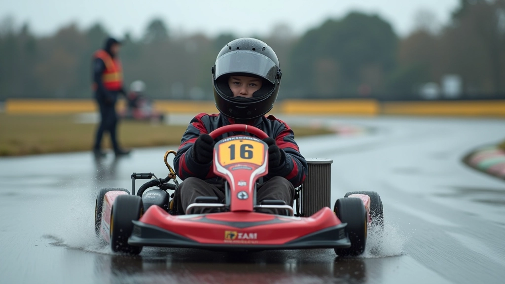
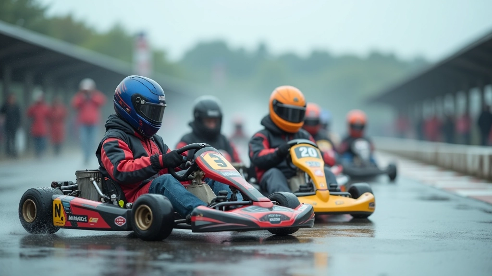

أساسيات التحكم بالكارت على الأسفلت المبلل
نتعلم المبادئ الأساسية لضبط المقود والتعامل مع فقدان الجر، مع التركيز على تقنيات الفرملة والتسارع الآمنة.
تعلم كيفية بناء مهاراتك على المسار المبلل بشكل منظم وآمن، خطوة بخطوة


الثقة لا تأتي من فراغ. في الواقع، يستغرق بناء ثقة حقيقية على المسار المبلل وقتًا وممارسة منتظمة. أغلب السائقين الذين لم يعتادوا على القيادة في ظروف رطبة يشعرون بالقلق في البداية — وهذا طبيعي تمامًا.
ما نتحدث عنه هنا ليس "تجاهل الخوف" أو "المخاطرة"، بل بناء مهارات حقيقية تجعلك تشعر بالسيطرة. عندما تفهم كيف يتصرف الكارت على الأسفلت الرطب، وتعرف ما يمكنك توقعه، يختفي الخوف بشكل طبيعي. يحل محله ثقة حقيقية.
نحن لا نركض مباشرة على المسار المبلل بأقصى سرعة. هناك منطق واضح في كيفية بناء المهارات. يستغرق الأمر عادة 6-8 أسابيع من التدريب المنتظم قبل أن تشعر بأنك مستعد للمنافسة الفعلية.
تبدأ بفهم كيفية تصرف الكارت على السطح الرطب. السرعات منخفضة، والتركيز على الإحساس والردود الأولية. تتعلم كيف يختلف التسارع والفرملة عن الأسفلت الجاف. هذه المرحلة عن الاستكشاف، وليس عن السرعة.
الآن تبدأ بتطبيق التقنيات الصحيحة بشكل منتظم. تعمل على تحسين قبضتك على المقود، وضع جسدك، وتوازن السرعة في المنعطفات. تكرر نفس الحركات مرارًا وتكرارًا حتى تصبح تلقائية. هذا هو وقت الممارسة الجادة.
بدأت تشعر بالفرق. يمكنك الآن الركض بسرعات أعلى بثقة أكبر. تبدأ بتطوير "حدسك" للسيارة — تعرف ما ستفعله قبل أن تفعله. تركز على التفاصيل الدقيقة: زوايا الدخول، نقاط الخروج، توقيت الفرملة.
الآن تشعر بالسيطرة الحقيقية. الخوف تحول إلى احترام للظروف. تستطيع اتخاذ قرارات سريعة وآمنة على المسار. تعرف حدودك وحدود السيارة. هذا وقت الاستعداد للمنافسة الفعلية.


كل هذا يبدو جميلًا من الناحية النظرية، لكن كيف تطبقه فعليًا؟ إليك ما يعمل حقًا:
لا تحاول تحسين كل شيء في نفس الوقت. اختر جانبًا واحدًا — ربما إدارة المقود أو توازن السرعة — وركز عليه طوال الجلسة. عندما تشعر بالتحسن، انتقل إلى الجانب التالي.
المدرب يرى أشياء لا تراها. خذ ملاحظاته بجدية، لكن لا تحاول تصحيح كل شيء دفعة واحدة. غيّر شيئًا واحدًا، ركض بضع لفات، وشعر بالفرق قبل الانتقال للشيء التالي.
لا تركض بسرعة جنونية في محاولة للتعويض عن نقص الثقة. السرعة الحقيقية تأتي من التحكم والثقة، وليس من الضغط على الدواسة بقوة. عندما تتقن التقنية، السرعة تتبع بشكل طبيعي.

هذا المقال يقدم إرشادات تعليمية عامة حول تقنيات القيادة على المسار المبلل. لا يشكل بديلاً عن التدريب الشخصي المباشر من مدرب معتمد. السلامة أولاً — تدرب دائمًا تحت إشراف متخصصين، واستخدم المعدات الوقائية المناسبة، واتبع جميع قواعد وتنظيمات المسار. الظروف تختلف من مسار لآخر، والممارسة الآمنة ضرورية قبل محاولة أي تقنيات جديدة.
بناء الثقة على المسار المبلل ليس سحرًا — إنه عمل منتظم وممارسة ذكية. كل لفة تقودها تضيف شيئًا إلى خبرتك. كل خطأ تتعلم منه يقربك من التحكم الحقيقي.
ابدأ من حيث أنت الآن. لا تقارن نفسك بالسائقين الآخرين. ركز على تحسن نفسك، حتى لو كان صغيرًا. بعد بضعة أسابيع من التدريب المنتظم، ستندهش من مدى اختلاف شعورك على المسار.
جاهز لتحسين مهاراتك أكثر؟
استكشف التقنيات المتقدمة